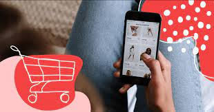
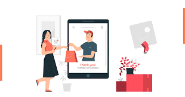

¡Abre las puertas de tu tienda de moda en línea con este tutorial completo de e-commerce de ropa! Aprende cómo crear una plataforma de venta atractiva y fácil de usar para presentar tus colecciones al mundo. Desde la configuración de la tienda hasta la gestión de inventario y la optimización del proceso de pago, este tutorial te ayudará a establecer y hacer crecer tu negocio de moda en línea.
Exploracion de productos
BEC podría ofrecer a los usuarios una amplia selección de prendas de vestir para explorar, incluyendo ropa para hombres, mujeres y niños, así como accesorios como bolsos, zapatos y joyería. Los usuarios podrían navegar por diferentes categorías de productos, como camisetas, pantalones, vestidos, etc., para encontrar lo que están buscando.
Lista de deseos
Los usuarios podrían guardar sus productos favoritos en una lista de deseos para revisarlos más tarde o para recibir notificaciones cuando haya descuentos o promociones disponibles.
Interaccion social
BEC podría integrar funciones sociales que permitan a los usuarios compartir productos con amigos, familiares o en redes sociales, así como ver las recomendaciones y opiniones de otros usuarios.
Compra directa
Desde el catálogo, los usuarios podrían agregar productos a su carrito de compras y proceder a realizar la compra de manera segura utilizando métodos de pago populares como tarjetas de crédito, PayPal, etc.
Segumiento de pedidos
Después de realizar una compra, los usuarios podrían recibir actualizaciones sobre el estado de su pedido y seguir el proceso de entrega en tiempo real.
Volver al Inicio